Skin Tools
Notes
SkinCluster operations in this tool are based on several prerequisites: - Assumes skinCluster method is Classic Linear and does not support other methods. - Does not support multiple skinCluster support introduced in Maya 2024 and later.
Usage
Launch the tool from the dedicated menu or with the following command.
import faketools.tools.rig.skin_tools.ui
faketools.tools.rig.skin_tools.ui.show_ui()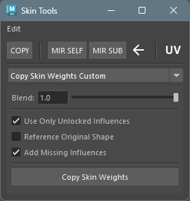
Edit Menu
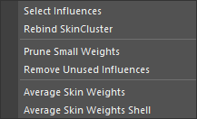
- Select Influences
- When you select geometry and vertices (multiple objects allowed) and execute, selects influences of skinCluster set for them.
- When vertices are selected, selects only influences with weights of 0 or more for those vertices.
- Rebind SkinCluster
- When you select geometry and vertices (multiple objects allowed) and execute, rebinds skinCluster set for them at the positions of its influences.
- Prune Small Weights
- When you select geometry and execute, sets weights of influences with weights less than 0.005 to 0. Unlike Maya’s standard function, ignores locked influences.
- Add Influences
- When you select geometry (multiple selection allowed) and select joints (multiple selection allowed) you want to add and execute, adds those joints as influences to skinCluster of selected geometry.
- Remove Unused Influences
- When you select geometry (multiple selection allowed) and execute, removes influences with all weights of 0 from that skinCluster.
- Average Skin Weights
- When you select vertices and execute, averages weights of selected vertices.
- Average Skin Weights Shell
- When you select geometry and execute, averages weights of selected geometry per shell.
Skin Tools Bar
Copies and mirrors weights.
If destination is not bound, automatically creates
skinCluster.
Copy
Copies and mirrors weights.
Performs weight copy.
- Select source geometry.
- Select destination geometry (multiple selection allowed).
- Press
COPYbutton to copy source weights to destination. When referencing UV, checkUVcheckbox.
This tool forcibly adds influences set in source geometry to destination geometry’s skinCluster.
Mirror Self
Mirrors weights.
- Select geometry.
- Press
MIR SELFbutton to mirror weights of selected geometry. At this time, select mirroring direction with arrow button. For<-, mirrors from X to -X, for->, mirrors from -X to X.
This tool searches for left and right influences set in selected geometry, and if opposite influences are found, forcibly adds those influences to skinCluster.
Mirror Sub
Mirrors weights to different geometry.
Usage example: For example, when mirroring weights of left and right shoes of a character wearing shoes.
- Select left shoe geometry.
- Press
MIR SUBbutton. Steps executed at this time are as follows:- Generates right shoe geometry name from left shoe geometry name.
- If right shoe geometry is found, converts influence names set in left shoe geometry from left to right names.
- If converted influence names exist in right shoe geometry, forcibly adds those influences to skinCluster or creates new skinCluster and adds them.
- Copies weights set in left shoe geometry to right shoe geometry.
※ Method for searching opposite geometry and influences is the same as Mirror Self.
Copy Skin Weights Custom
Copies weights from mesh to other shapes.
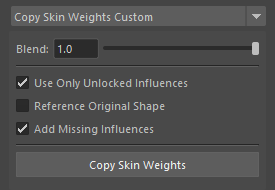
Usage
To copy weights, follow these steps:
- Select source geometry.
- Select destination geometry (multiple selection allowed).
- Select weight copy method and press
Copy Skin Weightsbutton.
Options
- Blend
- Copies weights at specified ratio.
- Use Only Unlocked Influences
- Uses only unlocked influences for copying.
- Reference Original Shape
- References original shape (Intermediate Object) for copying.
- Add Missing Influence
- Automatically adds influences that don’t exist in destination during copy.
Skin Weights to Mesh
Duplicates geometry with skinCluster applied to
different mesh while preserving weight
information.
Source geometry must be mesh or NURBS surface.
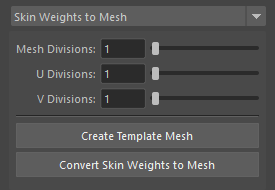
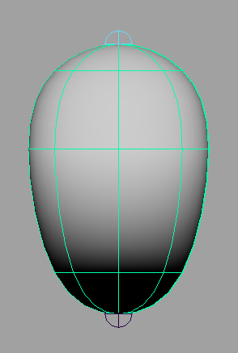
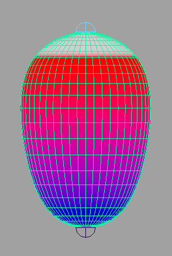
Usage
To duplicate, follow these steps:
- Select geometry with skinCluster set (multiple selection allowed).
- If selected geometry is mesh, set
Mesh Division; if NURBS surface, setU DivisionandV Division. - Press
Convert Skin Weights to Meshbutton.
Pressing Create Template Mesh button
creates geometry that becomes preview of duplicated
mesh. In preview state, you can change each division
value from UI.
Adjust Center Skin Weights
Adjusts weights of vertices with weights applied.
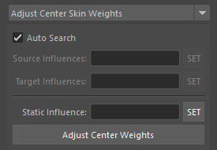
Mainly adjusts weights of vertices at center position. Here, “center position” refers to vertices located on left-right symmetry axis of geometry.
“Adjustment” means making weight values of influences with left-right meaning the same for center position. For example, if center vertex has three influences (spine and left-right shoulders) with weights of 0.4, 0.2, 0.4 respectively, using this tool adjusts them to 0.4, 0.3, 0.3 respectively.
Usage
When Auto Search is Enabled
When Auto Search is enabled,
automatically searches for paired influences from
selected vertices’ skin cluster. Automatic search is
performed by regular expression from
ADJUST_CENTER_WEIGHT described in
settings.json.
When Auto Search is Disabled
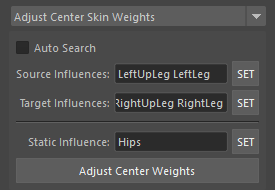
- Select one of left or right influences (multiple
allowed) for
Source Influencesand pressSETbutton. - Select influences paired with
Source InfluencesforTarget Influencesand pressSETbutton. - Press
Adjust Center Weightsbutton.
When no influence is registered in
Static Influence, average value of source
and target influence pairs is set.
On the other hand, when influence is registered in
Static Influence, source influence weight
value is applied to target influence. If total of all
influence weight values exceeds 1.0 as a result, that
difference is subtracted from Static Influence.
Combine Skin Weights
Combines weights from multiple influences to one influence.
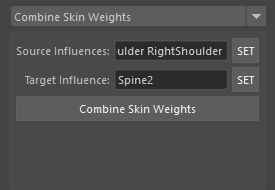
Usage
To combine weights, follow these steps:
- Select source influences (multiple allowed) for
Source Influencesand pressSETbutton. - Select destination influence for
Target Influenceand pressSETbutton. - Press
Combine Skin Weightsbutton.
Relax Skin Weights
Smooths and relaxes weights.
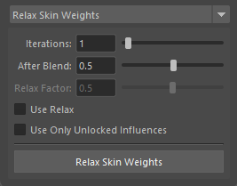
Usage
To smooth and relax weights, follow these steps:
- Select components.
- Set options.
- Press
Relax Skin Weightsbutton.
Options
- Iterations
- Sets smooth iteration count. More iterations smooth weights more.
- After Blend
- Sets ratio to blend original weights with smoothed weights after smoothing. 0.0 for original weights, 1.0 for smoothed weights.
- Relax Factor
- Sets the relaxation factor when using Relax
Operator. Higher values produce results closer to the
neighbor average. Only used when
Use Relaxis enabled.
- Sets the relaxation factor when using Relax
Operator. Higher values produce results closer to the
neighbor average. Only used when
- Use Relax
- When enabled, switches the smoothing method from Laplacian to Relax Operator. Relax Operator blends the original weights with the neighbor average, producing smoother results than Laplacian.
- Use Only Unlocked Influences
- Smooths using only unlocked influences. Somewhat experimental feature.
Influence Exchange
Exchanges already bound influences with unbound influences.
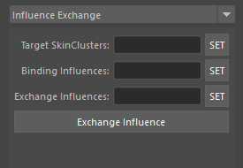
Usage
To exchange influences, follow these steps:
- Select skin clusters to exchange for
Target SkinClustersand pressSETbutton. - Select source influences to exchange for
Binding Influencesand pressSETbutton. All influences set here must be bound to skin clusters set inTarget SkinClusters. - Select destination influences to exchange for
Exchange Influencesand pressSETbutton. All influences set here must not be bound to skin clusters set inTarget SkinClusters. - Press
Exchange Influencesbutton.